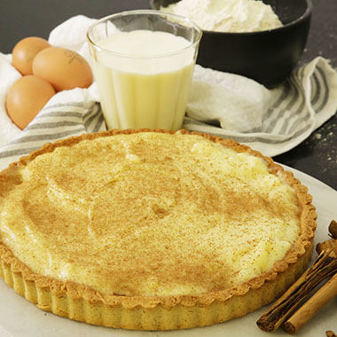

Carbonara

A sweet treat that can come after any meal.
Ingredients
- 100g pancetta
- 50g pecorino cheese
- 50g parmesan
- 3 large eggs
- 350g spaghetti
- 2 plump garlic cloves, peeled and left whole
- 50g unsalted butter
- Sea salt and freshly ground pepper
Method
STEP 1
Put a large saucepan of water on to boil.
STEP 2
Finely chop the 100g pancetta, having first removed any rind.
Finely grate 50g pecorino cheese and 50g parmesan and mix them together.
STEP 3
Beat the 3 large eggs in a medium bowl and season with a little freshly grated black pepper.
Set everything aside.
STEP 4
Add 1 tsp salt to the boiling water, add 350g spaghetti and when the water comes back to the boil, cook at a constant simmer, covered, for 10 minutes or until al dente (just cooked).
STEP 5
Squash 2 peeled plump garlic cloves with the blade of a knife, just to bruise it.
STEP 6
While the spaghetti is cooking, fry the pancetta with the garlic. Drop 50g unsalted butter into a large frying pan or wok and, as soon as the butter has melted, tip in the pancetta and garlic.
STEP 7
Leave to cook on a medium heat for about 5 minutes, stirring often, until the pancetta is golden and crisp. The garlic has now imparted its flavour, so take it out with a slotted spoon and discard.
STEP 8
Keep the heat under the pancetta on low. When the pasta is ready, lift it from the water with a pasta fork or tongs and put it in the frying pan with the pancetta. Don’t worry if a little water drops in the pan as well (you want this to happen) and don’t throw the pasta water away yet.
STEP 9
Mix most of the cheese in with the eggs, keeping a small handful back for sprinkling over later.
STEP 10
Take the pan of spaghetti and pancetta off the heat. Now quickly pour in the eggs and cheese. Using the tongs or a long fork, lift up the spaghetti so it mixes easily with the egg mixture, which thickens but doesn’t scramble, and everything is coated.
STEP 11
Add extra pasta cooking water to keep it saucy (several tablespoons should do it). You don’t want it wet, just moist. Season with a little salt, if needed.
STEP 12
Use a long-pronged fork to twist the pasta on to the serving plate or bowl. Serve immediately with a little sprinkling of the remaining cheese and a grating of black pepper. If the dish does get a little dry before serving, splash in some more hot pasta water and the glossy sauciness will be revived.
HOME